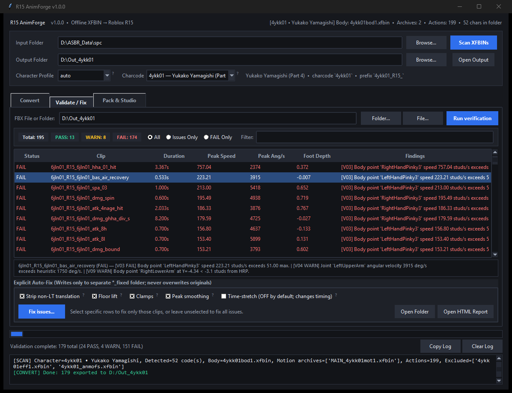
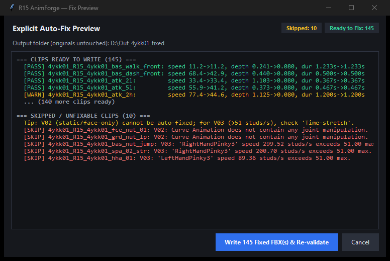
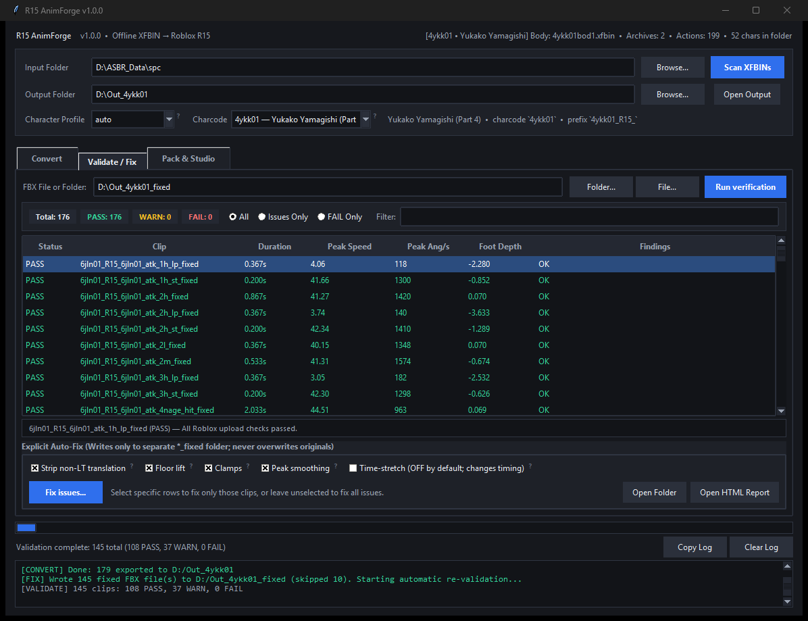

A self-contained, offline Windows desktop application and CLI that converts JoJo's Bizarre Adventure: All-Star Battle R (and compatible CyberConnect2) .xfbin character animations into Roblox R15-ready .fbx clips, synthesizes cyclic Idle/Jump/Fall packs, validates against Roblox Avatar Item rules, auto-fixes issues into isolated folders, and generates Studio Luau post-processors.
R15 AnimForge automates the complete conversion of CyberConnect2 .xfbin character archives into Roblox-ready 16-bone R15 .fbx animations. It runs completely offline with its own bundled portable Blender 5.3.0 runtime and patched Al-Hydra Blender-XFBIN-Importer, requiring zero pre-installed Python, Blender, or network access.
Core Design Guarantees
100% Offline & Portable
Zero network calls, zero telemetry, zero external dependencies. Runs directly from dist\AnimForge\AnimForge.exe with Blender 5.3.0 bundled beside the executable and isolated from your user %APPDATA% Blender config.
Universal Multi-Character ASBR Support
Auto-detects any CC2 character code (e.g. 4rhn01, 4ykk01, 7val01, 3jtr01, 1dio01), even inside a combined spc folder with 50+ characters, and learns stance naming formulas like bas_r_* or bas_s_*.
Strict Non-Destructive Separation
Convert exports clean R15 FBXs with all cleanup toggles OFF by default and never runs upload checks unless you opt in. Fix writes exclusively to a separate *_fixed folder and never overwrites original FBX files.
Per-Clip Error Isolation
One static/face-only clip or extreme combat snap never aborts a batch. Every skip, fix, and warning is isolated per clip, shown in the dark preview dialog, and logged to convert_report.json / fix_log.json.
Retargeting & FBX Export Technical Specification
Parameter
Verified Value
Notes
Target Rig
16-bone upright R15 I-pose
HumanoidRootPart root + 15 animated child joints; bone tail +0.20m Z, roll 0.0.
Rest-Pose Arm Offsets
L: (0, -90°, 0) / R: (0, +90°, 0)
Aligns CC2 T-pose arms into Roblox upright R15 arm orientation before world-delta retargeting.
Pelvis Height Scaling
0.70 / src_pelvis_rest.z
Automatically normalizes tall vs. short character pelvis translation into R15 scale.
Quaternion Mapping
q_rbx = (w, -x, +y, -z)
Hemisphere-continuous quaternions baked per frame at 30 FPS; zero 360° SLERP flips.
Follow these five steps to convert any JoJo ASBR / CC2 character's .xfbin archives into a validated Roblox R15 Animation Pack. You can hover over any tiny superscript ? inside the program for an instant reminder of what an option does.
1
Launch & Scan Your Character Folder — Double-click AnimForge.exe (no console window pops up). Set Input Folder to either a single character folder or a combined ASBR spc dump, set Output Folder to where you want .fbx files saved, keep Character Profile on auto, and click Scan XFBINs. If multiple characters exist in the folder, pick your target code from the Charcode dropdown — it re-scans that character automatically.
2
Export Locomotion / Pack Clips & Procedural Loops — In the Convert tab, click Locomotion to select only core pack clips (Walk, Run/Dash, Idle, Jump, Fall), or keep All to export the character's entire moveset. Click Convert Selected to export raw R15 .fbx clips, and click Build Selected Procedural Clips to synthesize seamless Idle Loop, Alt Idle Look, Jump (starting from idle), and Fall Loop (matching Jump apex).
3
Validate Against Roblox Upload Rules — Switch to the Validate / Fix tab (or check Verify for upload before converting). Point FBX File or Folder to your output folder and click Run verification. Every FBX is sampled at true 30 FPS and checked against Roblox's 30 & 70 FPS speed cap (51 studs/s), Roxie floor depth (-0.10 studs), non-LowerTorso translation, and joint limits.
4
Auto-Fix Failing Clips & Confirm Re-validation — Select specific rows in the table (or leave unselected to fix all issues), review the Explicit Auto-Fix checkboxes, and click Fix issues.... Inspect the dark Fix Preview modal, then click Write Fixed FBX(s) & Re-validate. Fixed clips are written to a new *_fixed folder and automatically re-validated on disk so you see real PASS confirmation.
5
Import in Roblox Studio, Run Luau Script & Publish as Version 1 — Import the fixed .fbx clips onto your R15 rig in Studio's Animation Editor. In AnimForge's Pack & Studio tab, click Copy Studio Script, paste it into Studio's Command Bar and press Enter to convert quaternion curves to valid EulerRotationCurve (XYZ). Load each ... [FIXED] animation, publish each as a NEW animation (Version 1), paste the 9 IDs into Pack & Studio, and run Check Pack Manifest (V10).
Figure 1 — Convert Tab Workspace: Top bar shows detected character (4ykk01), body archive, action count, and 52 characters available in the folder. Left pane filters and toggles individual actions (with the 1-click Locomotion preset). Right pane groups the 2-column Optional Cleanup Operators, dynamic Idle / Jump / Fall Builders with matched clip names, and Convert & Optional Upload Check. The bottom bar tracks progress and logs color-coded events.
Every non-obvious control in R15 AnimForge carries a tiny superscript ? badge showing its inline hover explanation. Below is the complete reference of every setting, its default value, its internal threshold, and when to change it.
Top Workbench Bar (Shared Across All Tabs)
Control
Default
Behavior & Guidance
Input Folder
Last used
Root folder containing .xfbin archives. Scanned recursively — works on single-character folders or full ASBR spc dumps. Never modified.
Output Folder
Last used
Destination for exported R15 .fbx files, convert_report.json, bone_map_report.json, and .animforge_cache.json.
Character Profile?
auto
Selects bone-mapping aliases, rest-pose offsets, and builder recipes. Keep auto for universal ASBR/CC2 detection (automatically loads 4rhn01.json if Rohan is detected).
Charcode?
auto
Populated automatically with every character code discovered in Input Folder. Picking a code re-scans that character immediately in 1 click. Resets to auto when browsing a new Input Folder.
When checked, automatically switches to Validate / Fix and runs read-only verification right after conversion completes.
Remember choice?
OFF
Persists your Verify for upload preference in %LOCALAPPDATA%\AnimForge\settings.json across restarts.
Convert Selected / Cancel
Parallel (1–4)
Runs headless Blender workers with SHA-256 resume caching. Clicking Cancel terminates active Blender workers cleanly.
R15 AnimForge v1.0.0Section 04 • Procedural Builders & Formula Matcher
04 Procedural Builders & Smart Formula Matcher
Fighting games rarely ship ready-made Roblox-style cyclic breathing idles or seamlessly linked Jump → Fall animations. AnimForge's Idle / Jump / Fall Builders synthesize four pack-ready animations directly from any character's base clips.
Secondary idle for Roblox Animation1 (Weight=1). Adds smooth Hermite-eased head look-left / look-right turns, subtle torso weight shift, and breathing while holding both feet planted on the ground.
Starts at the character's idle pose (frame 0), dips into crouch takeoff (frame 2 of nut_jump), drives upward through polished launch frames (smoothed to stay under 51 studs/s), and settles cleanly into the apex pose of Fall Loop.
Fall Loop? *_R15_Fall.fbx
36 frames 1.17s LOOP
hang_action (bas_jump_lp)
Polishes the airborne hang loop with upright torso yaw alignment, elbow/wrist/foot clamps, and exact cyclic wrapping anchored to the final frame of Jump for zero snap when transitioning from Jump to Fall in-game.
How the Formula Learner Works Across Every ASBR Character
Different JoJo ASBR characters use different internal naming conventions (for example, Rohan uses 4rhn01_bas_jump_lp, Yukako omits bas_nut_st, Part 7 mounted/stance characters use 7val01_bas_r_jump_lp, and Stand variants use 3jtr10_bas_s_jump_lp). Instead of requiring exact names, action_matcher.py runs a 3-tier universal resolver shared by both the GUI and Blender worker:
Tier 1 & 2 — Prefix Stripping & Stance Learning
Strips charcode prefixes case-insensitively — including cross-variant prefixes (e.g. 3jtr10_* inside a 3jtr01 dump) and archive suffixes (_001).
Inspects all scanned locomotion clips to learn any inserted 1–3 char stance tag (e.g. bas_r_*, bas_s_*).
Penalizes directional variants (front, back, left, right) and rejects combat/damage clips (atk, dmg, hit, end) so 7val01_bas_r_jump_lp always beats 7val01_bas_r_jump_front_lp.
Tier 3 — Graceful Role Fallback Ladder
If bas_nut_st is absent (e.g. 4ykk01), Idle Loop and Alt Idle Look fall back to bas_nut (or idle / wait / stand) automatically.
If bas_nut_jump is absent, Jump uses frame 0 of the matched launch_action (bas_*_jump) as the crouch pose.
If only a Fall clip exists without idle/launch clips, Fall Loop still builds cleanly standalone.
Reading Builder Status Badges in the UI
Status Line Color & Text
Meaning
GREENReady (k/k exact): ...
Every required source clip matched the character's exact canonical name.
GREENMatched (formula bas_r_*): ...
Matched via the character's learned stance formula (e.g. 7val01_bas_r_jump_lp).
AMBERMatched (best match): ...
One or more missing roles fell back cleanly to a compatible alias (e.g. 4ykk01_bas_nut for standing pose). Fully ready to build.
REDNo match found for: ...
No suitable animation exists in the scanned archive for that role; checkbox is automatically disabled to prevent failed builds.
Tip — UpperTorso Toggle Applies to Builders Too: The UpperTorso flush align checkbox under Optional Cleanup Operators is also respected when clicking Build Selected Procedural Clips, keeping your procedural Idle/Jump poses consistent with your converted batch.
The Validate / Fix tab checks exported .fbx files offline against Roblox's Avatar Item Category rules (simulated on R15 / Roxie forward kinematics at both 30 FPS and 70 FPS) and repairs fixable clips into an isolated *_fixed folder with automatic post-export re-validation.

Figure 2 — Validate / Fix Tab (Before Fixing): Live summary pills (Total: 179 | PASS: 24 | WARN: 4 | FAIL: 151), status filter radio buttons (All / Issues Only / FAIL Only), search box, clickable sortable columns (sorted descending by Peak Speed), and the untruncated Selected Clip Detail strip below the table.
Explicit Auto-Fix Categories
Checkbox
Default
What It Changes
Strip non-LT translation?
ON
Zeros translation on all 14 bones other than LowerTorso (fixes V06).
Floor lift?
ON
Shifts LowerTorso.Y upward so feet stay at ≤ 0.07 studs depth (fixes V05) AND all body/hand tips stay above -3.02 studs (fixes V09).
Clamps?
ON
Applies wrist/elbow clamps plus a 178°V08 rest-angle ceiling so joints stay within safe bounds.
Peak smoothing?
ON
Targeted kinematic-chain SLERP smoothing + spike damping targeting ≤ 42.5 studs/s (V03) and ≤ 1600 deg/s (V04), plus smooth loop-seam closing (V11) on looping clips.
Time-stretch?
OFF
Uniformly slows extreme clips (up to 4.0×, capped at ≤ 9.8s) with exact endpoint mapping to preserve loop seams. OFF by default because it changes clip duration.

Figure 3 — Dark Fix Preview Modal: Shows every before→after speed, depth, and duration diff plus exact skip reasons before writing a single file.

Figure 4 — Automatic Post-Fix Re-validation: Immediately switches to D:\Out_4ykk01_fixed and re-verifies exported FBXs on disk (145 total, 0 FAIL).
R15 AnimForge v1.0.0Section 06 • Roblox Studio & Pack Publishing
06 Roblox Studio Post-Processing & Pack Publishing
Importing a clean R15 .fbx into Roblox Studio's Animation Editor creates a CurveAnimation with Quaternion RotationCurve instances by default. Roblox's Marketplace Avatar Item Category validator rejects RotationCurve as an unauthorized instance type — so every clip must be converted to EulerRotationCurve (XYZ) in Studio before publishing.
Figure 5 — Pack & Studio Tab: Displays 1-click Copy Studio Script, Check Pack Manifest (V10), the Roblox Version-1 publishing reminder banner, and all 9 required Roblox pack slots with automatic • Fixed FBX ready / • FBX on disk status indicators.
Studio Post-Processing & Publishing Checklist
1
Import FBXs into Studio — Open Roblox Studio's Animation Editor on your R15 rig (e.g. Workspace.AnimRig), click ... → Import → From FBX Animation for each clip from your *_fixed folder, and save each clip under the rig's AnimSaves.
2
Run the Studio Luau Post-Processor — In AnimForge's Pack & Studio tab, click Copy Studio Script (or Export Studio Luau Script...). In Roblox Studio, open View → Command Bar, paste the script, and press Enter. It creates a schema-valid ... [FIXED] copy of every CurveAnimation (60 FPS unwrapped EulerRotationCurve order XYZ, zeroed non-LowerTorso positions, empty MarkerCurve, Loop=false on Jump, Loop=true on locomotion/idle, zero banned classes).
3
Publish Every Clip as a NEW Asset (Version 1) — In the Animation Editor, load each ... [FIXED] animation (do not switch curve mode back to Quaternion) and click ... → Publish to Roblox as a brand-new Animation asset. Paste each returned rbxassetid://... into the matching slot in AnimForge's Pack & Studio tab and click Check Pack Manifest (V10).
Critical Roblox Marketplace Rule — Version 1 Only: Never overwrite an existing Roblox animation ID for an Avatar Animation Pack. Overwriting bumps the asset to version: 2, causing Marketplace submission to fail with Unexpected version number for dependency asset id ... version: 2. Expected version: 1. Always submit as a new asset so it remains version 1.
R15 AnimForge's validation rules in data/roblox_rules.json mirror Roblox Studio's UGCValidation checks and Roxie reference rig calibrations. Rules marked FAIL block Marketplace submission; rules marked WARN are heuristic or soft safety alerts.
Rule
Check Name
Level
Threshold
Auto-Fixable?
Description & Remedy
V01
Curve Types Allowed
FAIL
6 allowed classes
Studio Luau
Only MarkerCurve, AnimationRigData, Folder, Vector3Curve, EulerRotationCurve, FloatCurve permitted. Run Studio Luau script to remove RotationCurve.
V02
Joint Manipulation Present
FAIL
≥ 0.001 rad
No
At least one of the 15 R15 joints must rotate. Static guard holds and facial-only clips (fce_*) fail and cannot be auto-fixed.
V03
Max Body & Tip Linear Speed
FAIL
51.0 studs/s (fix target 42.5)
Yes Smooth / Stretch
Sampled at 30 FPS & 70 FPS across all 15 joints plus virtual pinky tips (Left/RightHandPinky3) and foot soles. Enable Time-stretch for snaps smoothing alone cannot tame.
V04
Max Joint Angular Velocity
WARN
1750 deg/s (fix target 1600)
Yes Smooth / Stretch
Heuristic warning when any joint spins faster than 1750 deg/s. Peak smoothing applies targeted kinematic-chain spike damping to clear V04 cleanly to PASS.
V05
Max Floor Penetration Depth
FAIL
0.10 studs (fix target 0.07)
Yes Floor lift
Tests all 8 bounding corners of both feet against the Roxie standing floor plane (-2.7009 studs from HRP). Fixed by lifting LowerTorso.Y.
V06
Non-LowerTorso Translation
FAIL
≤ 0.30 studs
Yes Strip trans.
Only LowerTorso may translate; all other 14 joints must stay pinned. Auto-fix strips all non-LowerTorso translation to zero.
V07
Key Spacing & Duration
FAIL
(0, 10.0]s dt ≥ 1/70s
No
Animation duration must be positive and ≤ 10 seconds, with keyframe spacing ≥ 1/70 s. Clips longer than 10s must be trimmed manually.
V08
Max Joint Angle From Rest
FAIL
≤ 180°
Yes Clamps
Joint angle from rest pose must remain within 180°. Clamps enforces a safe margin below the threshold.
V09
Lowest Point / Max Bounds
WARN
Y ≥ -3.1 (fix target -3.02)
Yes Floor lift
Soft bounds check relative to HumanoidRootPart. Floor lift raises LowerTorso.Y to clear low hand/body dips below -3.1 studs.
V10
Pack Manifest Schema
FAIL
Exact 9 slots
Pack Tab
Verifies exact Studio StringValue names, child counts (1 per slot, 2 for idle), valid numeric asset IDs, positive weights, and zero duplicate IDs.
V11
Loop Seam Continuity
WARN
0.015 rad
Yes Smooth / Blend
Checked only on inferred looping clips (idle, walk, run, dash, fall, *_lp; transitions like bas_nut_turn excluded). Peak smoothing smoothly closes loop seams to exact 0.00 parity.
Verified 30 FPS Calibration: Both FBX export and validation extraction enforce 30 FPS, and post-fix re-validation reads the freshly written *_fixed.fbx directly back through headless Blender so the numbers in the table match what Roblox Studio imports.
Every GUI operation shares the same core Python library with the AnimForge.exe command-line interface. Passing arguments keeps stdout attached for scripting; double-clicking with no arguments launches the dark-mode GUI cleanly with no console window. All commands support --json, --profile, --charcode, and return non-zero exit codes on failure.
Command-Line Interface Quick Reference
# 1. Verify bundled Blender, profiles, math, validation, and procedural builders
.\AnimForge.exe selftest --json
# 2. Scan any ASBR folder (auto-detects charcode, or override with --charcode)
.\AnimForge.exe scan "D:\ASBR_Data\spc" --charcode 4ykk01 --json
# 3. Convert actions + build Idle/Jump/Fall procedural clips (add --verify-for-upload to validate)
.\AnimForge.exe convert "D:\ASBR_Data\spc" "D:\Out_4ykk01" --charcode 4ykk01 --build-procedural
# 4. Read-only Roblox upload validation (writes validation_report.json & validation_report.html)
.\AnimForge.exe validate "D:\Out_4ykk01"
# 5. Explicitly fix failing clips into a separate *_fixed folder and auto re-validate
.\AnimForge.exe fix "D:\Out_4ykk01" --apply strip_translation floor_lift clamps smoothing time_stretch
# 6. Generate/validate a V10 pack manifest & export Studio Luau post-processor
.\AnimForge.exe build-pack "D:\Out_4ykk01\pack_manifest.json" --write-template --studio-script-out "D:\Out_4ykk01\studio_fix.lua"
Custom Character Profiles (profiles/<charcode>.json)
The bundled profiles/auto.json handles almost every JoJo ASBR / CC2 character automatically. If a specific character needs a custom output prefix (like Rohan_R15_ in profiles/4rhn01.json), extra bone name aliases, or tuned cleanup angles, duplicate profiles/auto.json to profiles/<charcode>.json beside AnimForge.exe — auto mode will detect and load it automatically whenever that character code is scanned.
Troubleshooting Common Issues
Symptom / Error
Cause & Exact Fix
Studio: RotationCurve unauthorized / no joint manipulation
Roblox Animation Editor defaults FBX imports to quaternion curves. Click Copy Studio Script in the Pack & Studio tab, paste into Studio's Command Bar, press Enter, and publish the generated ... [FIXED] animations.
Studio Submit: version: 2. Expected version: 1.
You overwrote an existing Roblox animation ID. Re-publish that clip as a brand-new Animation asset (version 1) and update the AnimationId in your pack.
Skipped N unfixable clip(s) during Auto-Fix
Check the Fix Preview modal or Activity Log: V02 clips are face-only/static (cannot be uploaded as body anims); V03 clips >51 studs/s need the Time-stretch checkbox enabled. Extreme >150 studs/s teleport snaps need manual key trimming.
Extra or duplicated Animation instances inside a slot container. Keep exactly 1 child per slot (2 for idle: Animation1 Weight=1, Animation2 Weight=9) and run Check Pack Manifest (V10).
No body skeleton archive found on Scan
Ensure both the character's *bod1.xfbin and motion *mot1.xfbin / *viewer1.xfbin exist under Input Folder, and that Charcode is set to auto (or matches the character present in the folder).
Where are settings & caches stored?
App settings, private Blender env, and CRILAYLA cache live exclusively inside %LOCALAPPDATA%\AnimForge. Resume cache lives in <OutputFolder>\.animforge_cache.json.
Third-Party Attribution: R15 AnimForge bundles portable Blender 5.3.0 (GPL-2.0-or-later) and a patched snapshot of Al-Hydra's Blender-XFBIN-Importer. Full license texts and upstream references are included in THIRD_PARTY_LICENSES.md beside AnimForge.exe.